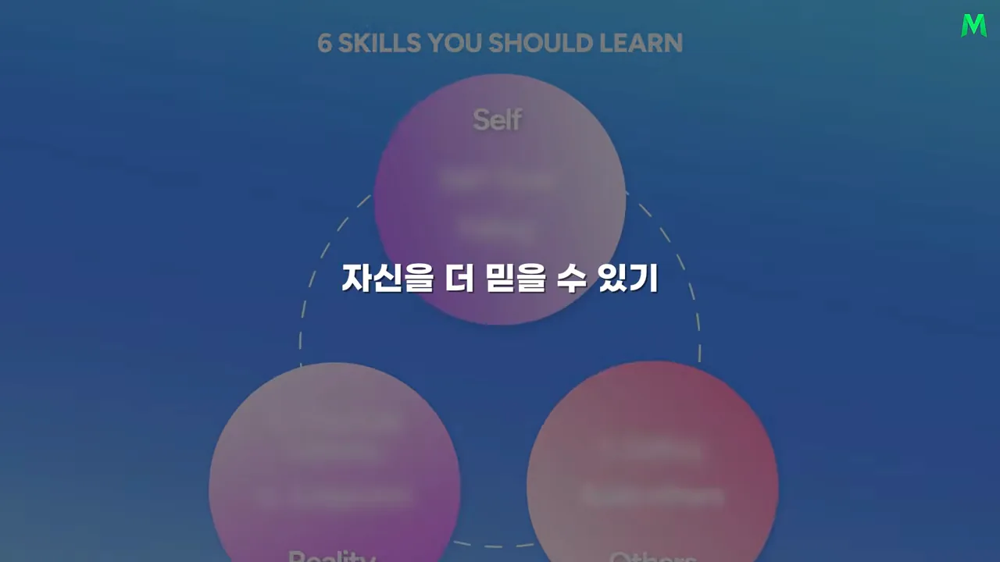
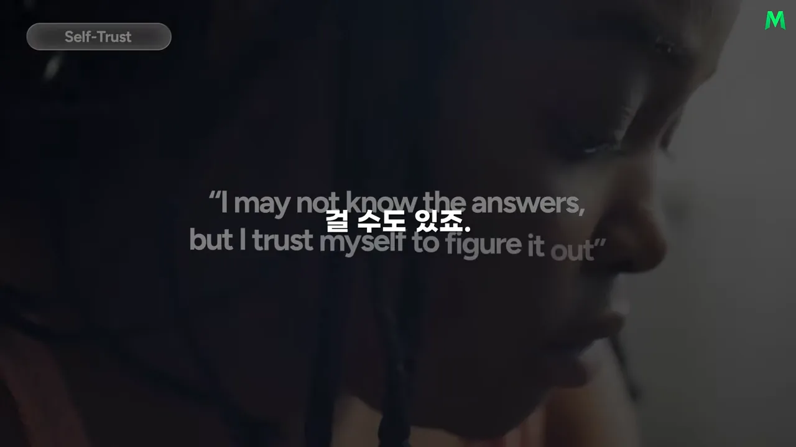
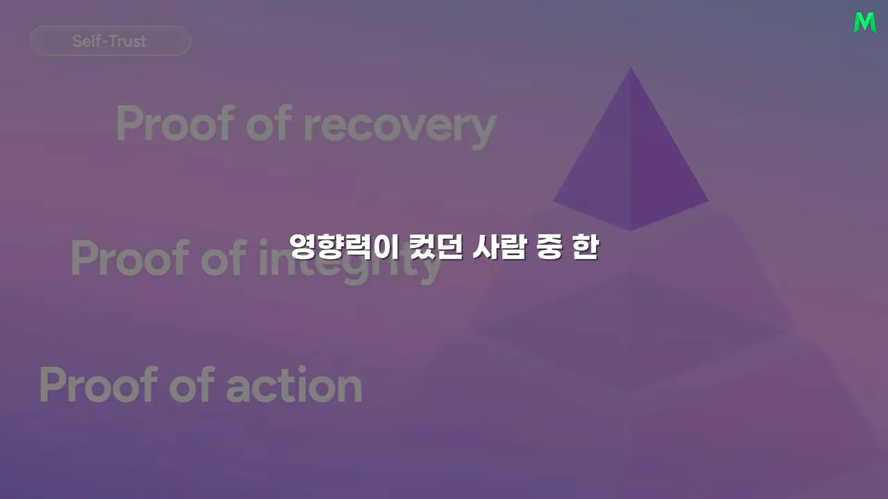
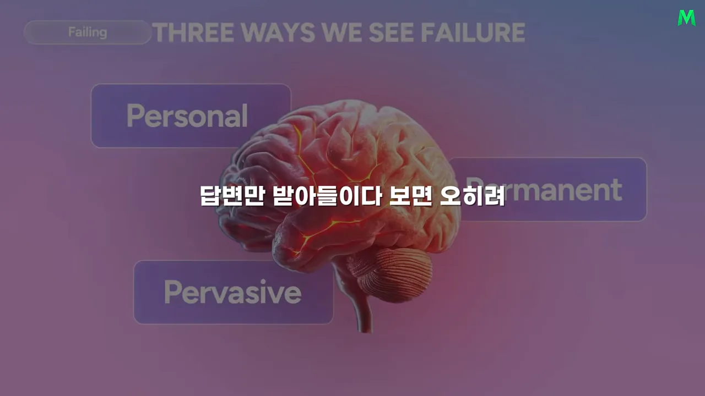

자신감보다 자기 신뢰
AI가 훨씬 똑똑해지면 무엇을 갖춰야 할까요? 더 많이 공부하거나 AI를 더 잘 다루는 법을 떠올리기 쉬워요. 수도승 수련생에서 테크 기업 CEO(Chief Executive Officer), 이사회 멤버, 투자자가 된 샌딥은 다르게 답해요. 학교도 회사도 가르쳐 주지 않는 능력이 더 중요해진다는 거예요.
원래 영상의 첫 슬라이드가 그 구조를 보여 줘요. 위의 Self, 아래 왼쪽 Reality, 오른쪽 Others, 세 원이 점선으로 이어져 있어요. 나와의 관계, 다른 사람과의 관계, 현실과의 관계에서 두 가지씩 능력을 꼽고, 마지막에 이 모두를 아우르는 능력 하나를 더해 일곱 가지가 돼요.

자신감은 행동 다음에 와요
세레나 윌리엄스는 그랜드 슬램을 23번 우승하고 20년 가까이 정상에 있었어요. 그런데도 스스로를 의심한다고 털어놨어요. 폴 매카트니도 다른 사람들처럼 불안한 구석이 있다고 말했어요. 성공이 쌓이면 자신감이 저절로 완성되는 게 아니라는 뜻이에요.
샌딥은 순서가 반대라고 봐요. 자신감이 생겨서 행동하는 게 아니라, 행동했기 때문에 자신감이 생긴다는 거예요. 근거로 드는 게 심리학자 앨버트 반두라의 뱀 공포증 실험이에요. 뱀을 심하게 무서워하던 사람들이 아래처럼 한 걸음씩 다가갔어요.
더 흥미로운 변화는 실험 뒤에 나타났어요. 참가자들은 자기 의견을 더 적극적으로 말하고, 어려운 대화를 피하지 않고, 미뤄 둔 일에 도전하기 시작했어요. 뱀 앞에서 생긴 자신감이 삶의 다른 곳으로 번진 거예요.
자신감과 자기 신뢰는 달라요
샌딥은 이렇게 생긴 힘을 자신감과 구분해 자기 신뢰라고 불러요. 원래 영상은 이 대목에서 화면에 한 문장을 띄워요. '답은 모를 수 있지만, 알아낼 수 있다고 나를 믿는다'는 뜻이에요.

| 자신감 | 자기 신뢰 | |
|---|---|---|
| 머릿속 말 | 나는 잘할 수 있을 거야 | 지금 답은 모르지만 어떻게든 방법을 찾아낼 거야 |
| 무엇에 대한 믿음 | 결과 | 결과를 만들어 가는 나 |
| 결과가 나쁠 때 | 쉽게 사라져요 | 오래 버텨요 |
증거 피라미드
자기 신뢰를 쌓는 방법은 세 층짜리 피라미드예요. 슬라이드 왼쪽에 아래부터 Proof of action, Proof of integrity, Proof of recovery가 쌓여 있어요.

- 행동의 증거(바닥) — 미뤄 둔 조금 어려운 일을 하나 해요.
- 약속을 지킨 증거(가운데) — 아주 작은 것이라도 나와 한 약속을 매일 지켜요.
- 회복의 증거(꼭대기) — 실패하거나 거절당하거나 창피를 당한 뒤에도 다시 돌아와요.
샌딥은 마지막 층을 가장 중요하게 봐요. 한 번도 실패하지 않은 사람보다, 실패하고도 다시 일어나 본 사람이 자신을 더 믿을 수 있어서예요.
실패해도 실패자가 되지 않기
실패를 겪으면 왜 '내가 실패했다'가 아니라 '나는 실패한 사람이다'라고 생각하게 될까요? 샌딥은 자기 경험부터 꺼내요. 그는 커리어에서 세 번 해고됐어요.
해고에서 CEO까지
가장 기억에 남는 건 뉴욕의 한 테크 기업에서 최고 매출 책임자로 일할 때예요. 신제품 출시가 크게 늦어지고, 화난 고객이 떠나면서 매출이 빠르게 떨어졌어요. 이사회가 끝난 날 CEO가 그를 회의실로 불러 그만둬야겠다고 했어요. 출입 열쇠를 돌려받고, 사무실에 들어가지 말라고 하고, 짐은 나중에 상자로 보내 주겠다고 했죠. CEO는 그를 엘리베이터까지 데려가 건물을 떠날 때까지 지켜봤어요.
집으로 가는 기차에서 그는 아내에게 뭐라고 말할지, 아내가 자기를 어떻게 볼지, 자기는 자기를 어떻게 봐야 할지만 생각했어요. 한두 달이면 새 일을 찾을 줄 알았는데, 거의 10개월 동안 아무것도 나오지 않았어요.
새 회사의 CEO는 친구이자 멘토가 됐고, 이 경험이 훗날 샌딥이 CEO가 되는 발판이 됐어요. 샌딥은 실패의 후유증이 생각보다 길다고 말해요. 사람을 작게 만들고, 혼자 남겨진 기분이 들게 하거든요.
실패를 해석하는 세 가지 틀
샌딥은 심리학자 마틴 셀리그먼의 연구를 빌려, 우리가 실패를 어떻게 해석하는지 설명해요. 원래 영상의 슬라이드에는 뇌 그림 둘레에 Personal, Permanent, Pervasive 세 단어가 붙어 있어요.

| 슬라이드 | 내레이션 | 머릿속 목소리 |
|---|---|---|
| Personal | 개인화 | 이번에 실패한 건 내게 문제가 있다는 뜻이야 |
| Permanent | 영구화 | 앞으로도 계속 이렇게 될 거야 |
| Pervasive | 확산 | 이걸 실패했으니 다른 것도 다 실패할 거야 |
실제로 실패 하나가 이 셋을 다 뜻하는 경우는 거의 없어요. 원래 영상에서 샌딥은 이 패턴을 알아차리면 그게 머릿속 목소리의 장난일 뿐이라는 게 보인다고 말해요.
실패를 대하는 세 가지 방법
- 유용한 실패를 많이 해요. 무모하게 실패하라는 게 아니라, 배울 게 있는 실패를 피하지 말라는 뜻이에요. 에드 시런은 초창기에 여러 음반사에서 팝스타 이미지와 안 맞는다며 거절당했고, 공연에서 야유도 들었어요. 그래도 다음 도시에서 다시 공연하며 음악을 고쳤어요. 실패할 때마다 데이터를 하나씩 얻은 셈이에요.
- 포트폴리오 사고로 봐요. 벤처 투자자는 모든 투자가 성공하리라 기대하지 않아요. 여러 곳에 나눠 걸어 한 번의 실패가 전체를 무너뜨리지 않게 해요. 내 선택도 리스크를 감당할 수 있는 크기로 쪼개요.
- 삶에는 끝이 있다는 걸 떠올려요. 원래 영상은 이걸 '누구도 피할 수 없는 치트키, 죽음'이라고 불러요. 그 사실 앞에서는 눈앞의 실패 하나가 인생 전체를 정하는 사건처럼 느껴지지 않아요.
중요한 건 실패하지 않는 사람이 되는 게 아니에요. 실패하더라도 자신을 실패자로 규정하지 않는 사람이 되는 거예요.
세일즈는 영향력이에요 — CARE
나를 다루는 법 다음은 다른 사람을 움직이는 법이에요. 샌딥은 사는 거의 모든 순간에 세일즈가 있다고 봐요. 면접에서는 나를 팔고, 데이트에서는 내 매력을 전하고, 투자를 받을 때는 사업의 가능성을 설득해요. 아이에게 인스타그램을 그만 보라고 말하는 것도 세일즈예요. 인스타그램이 이미 훨씬 강력한 걸 팔고 있으니 꽤 어려운 세일즈죠.
그래서 세일즈의 본질은 물건을 파는 기술이 아니라 사람에게 영향을 주는 능력이에요.
기술보다 신뢰
많은 사람이 세일즈라고 하면 말재주나 설득 기법부터 떠올려요. 샌딥이 만난 뛰어난 세일즈맨들은 달랐어요. 오랜 시간 믿을 만한 사람이 된 뒤, 자신이 진짜 믿는 걸 솔직하게 말했어요. 사람은 누가 뭔가를 팔려 한다고 느끼는 순간 본능적으로 경계하거든요.
또 하나, 사람들이 원하는 건 제품 자체가 아니라 그 제품을 쓴 뒤의 자기 모습이에요. 나이키 광고는 신발 소재나 밑창 기술을 늘어놓지 않아요. 애플, 할리데이비슨, 파타고니아도 기능이 아니라 그걸 쓸 때의 감정과 정체성을 함께 팔아요.
CARE 네 글자
샌딥은 좋은 세일즈에 필요한 네 가지를 CARE라는 단어로 묶어요. 영어로 '마음을 쓰다'라는 뜻이라 외우기도 쉬워요.
- C, 호기심 — 상대가 진짜 원하는 게 뭔지 궁금해해요. 승진을 원하는 사람은 직급보다 인정받고 싶은 마음이나 더 안정적인 수입을 원할 수도 있어요. 진짜 관심이 있어야 그걸 알아내요.
- A, 연결 — 내가 가진 것과 상대가 원하는 것을 이어요. 상대의 문제를 이해하지 못하면 이을 수가 없어요.
- R, 신뢰 — 과장하지 않아요. 제품이 할 수 있는 것만 말하고, 할 수 없는 것도 솔직히 말해요. 그래야 할 수 있다는 말까지 믿어 줘요. 신뢰는 쌓는 데 몇 년, 무너지는 데 몇 초면 돼요.
- E, 감정 — 선택한 뒤의 자기 모습을 떠올리게 해요. 스티브 잡스는 아이팟을 소개하면서 저장 용량이나 사양부터 말하지 않았어요. '주머니 속에 천 곡의 노래'라는 경험을 보여 줬죠.
Facts will make you nod, but feelings will make you move.
사실은 고개를 끄덕이게 하고, 감정은 사람을 움직이게 해요.
— 원래 영상 (이 영상 08:46 부근)
주변 사람을 키우는 사람
사람을 움직이는 것보다 더 강한 능력이 있어요. 내가 잘하는 걸 넘어 주변 사람을 더 잘하게 만드는 능력이에요.
두 리더
실리콘밸리 역사에서 가장 영향력이 컸던 사람 중 하나는 개발자도, 유명한 창업자도 아닌 빌 캠벨이에요. 미식축구 코치였고 39살에 해고도 겪었어요. 그 뒤 실리콘밸리로 와서 구글, 애플, 아마존, 메타, 트위터, eBay, 야후, 인튜이트의 창업자와 경영자를 도왔어요. 그는 소프트웨어를 만들 줄은 몰랐지만 사람을 키울 줄 알았어요.
샌딥은 반대 유형의 CEO도 직접 봤어요. 회의실에 들어가면 누가 제일 똑똑한지 바로 알 만큼 뛰어난 사람이었고, 회사와 매출도 빠르게 키웠어요. 하지만 함께 일하는 사람들을 작아지게 만들었어요.
| 빌 캠벨 | 천재형 CEO | |
|---|---|---|
| 잘한 것 | 사람을 키우기 | 회사와 매출을 키우기 |
| 주변 사람 | 창업자·경영자들이 성장했어요 | 작아졌어요 |
| 결과 | 여러 빅테크에 영향을 남겼어요 | 주가가 떨어지고 핵심 임원이 하나둘 떠났어요 |
좋은 사업과 목표가 있어도, 함께 일하는 사람이 존중받는다고 느끼지 못하면 결국 중요한 것들을 잃는다는 게 샌딥의 결론이에요.
좋은 팀의 공통점
구글도 같은 궁금증을 품고 사내 180개 팀을 분석했어요. 많은 사람이 똑똑한 사람이 모인 팀이 가장 잘할 거라고 예상했지만 답은 달랐어요. 성과 좋은 팀을 가른 건 높은 IQ(Intelligence Quotient)가 아니라 생각을 자유롭게 말할 수 있는 분위기, 곧 심리적 안전감이었어요. 틀린 말을 해도 공격받지 않고, 문제를 숨기지 않아도 되는 팀이 더 좋은 결과를 냈어요.
세 가지를 나눠 줘요
이런 분위기를 만드는 방법으로 샌딥은 세 가지를 남에게 나눠 주라고 해요. 셋이 쌓이면 팀에 심리적 안전감이 생기고, 팀이 크면 나도 커요.
- 관심 — 모두가 스마트폰을 들여다보는 시대라, 누군가에게 온전히 집중해 주는 것 자체가 귀해졌어요. 단 1분이라도 상대 말을 온전히 들어 줘요.
- 공 — 일이 잘되면 실제로 잘한 사람을 찾아 인정해요. '수고했어요'로 끝내지 말고, 어떤 판단이 좋았고 어떤 행동이 도움이 됐는지 구체적으로 말해요. 사람은 자기가 무엇을 잘했는지 정확히 알려 준 사람을 오래 기억해요.
- 주도권 — 팀원과 함께 만든 결과물은 그 사람이 직접 발표하게 해요. 관리자라면 팀이 결과의 주인이 되도록 맡겨요. 나를 돕는 사람이 아니라 스스로 주인이 되게 하는 거예요.
돈의 세 가지 현실
지금까지는 나와 다른 사람을 다루는 능력이었어요. 마지막 두 능력은 피할 수 없는 현실, 돈과 AI를 다뤄요. 샌딥이 먼저 꺼내는 건 돈이에요.
버핏의 재산은 언제 불었을까요
워런 버핏의 재산에는 잘 알려지지 않은 숫자가 하나 있어요. 원래 영상에 따르면 65세 때 재산은 약 30억 달러였고, 지금은 1,600억 달러예요. 재산의 98%가 65세 이후에 생긴 거예요. 내레이션은 이를 원화로 바꿔 약 4조 원에서 200조 원 넘게라고 말해요.
샌딥이 강조하는 건 버핏이 60대 이후 갑자기 투자를 잘하게 됐다는 게 아니에요. 복리가 시간을 두고 작동했다는 거예요. 문제는 사람의 머리가 복리의 힘을 직관적으로 이해하기 어렵다는 데 있어요. 그래서 금융 이해력이 생각보다 중요해요.
세 개의 질문
경제학자들이 사람들의 금융 이해력을 재려고 만든 질문은 놀랄 만큼 단순해요. 원래 영상은 달러로, 내레이션은 원화로 바꿔 물어요.
| 질문 | 정답 | 밑에 깔린 현실 |
|---|---|---|
| 100달러(약 13만 6천 원)를 연 2% 이자로 5년 두면 102달러(약 13만 9천 원)보다 많을까요, 적을까요? | 많아요 | 돈에는 복리가 작동하니 시간이 중요해요 |
| 예금 이자가 1%인데 물가가 2% 오르면 1년 뒤 살 수 있는 게 늘까요, 줄까요? | 줄어요 | 인플레이션은 현금의 구매력을 계속 깎아요 |
| 한 종목 주식과 여러 자산에 나눈 투자 중 어느 쪽이 위험을 더 줄일까요? | 나눈 쪽이에요 | 한곳에 다 거는 것보다 분산 투자가 나아요 |
정말 기본적인 질문이지만, 미국의 35세 미만 성인 상당수가 셋 중 적어도 하나를 틀렸어요. 원래 영상에서 샌딥은 그 비율을 85%가 넘는다고 말해요. 샌딥은 이 질문들이 결국 위의 세 가지 현실을 알려 주려는 것이라고 정리해요.
AI 시대의 판단력
돈 다음으로 이해해야 할 현실은 AI예요. 우리는 좋은 대학에 가고, 좋은 회사에 들어가고, 더 많이 공부하며 지적 능력을 키워 왔어요. 그런데 AI는 그렇게 오래 쌓아 온 지능의 희소성을 빠르게 낮추고 있어요. 몇 분이면 글을 쏟아내고, 많은 정보를 분석하고, 사람이 몇 시간 걸리던 일을 순식간에 끝내요.
만드는 힘보다 고르는 힘
그렇다면 AI보다 더 많이 아는 사람이 되는 게 답일까요? 샌딥은 아니라고 해요. AI보다 더 많이 생각하려 하기보다, AI가 만든 것을 더 잘 판단해야 한다는 거예요. AI에게 글을 부탁하면 몇 분 안에 수많은 문장이 나와요. 이제 문제는 만드는 능력이 아니라 그중 어떤 문장을 고를지예요. 여기서 사람의 판단력과 취향이 중요해져요.
AI를 쓸 때 조심할 세 가지
| 위험 | 무슨 일이 생기나요 |
|---|---|
| 틀린 말도 그럴듯하게 해요 | 매끄러운 문장이라 맞는 말처럼 들려서, 틀린 걸 알아채기 어려워요. |
| 평균으로 끌어당겨요 | 대부분의 사람이 생각하는 내용을 바탕으로 답해서, 그대로 따르면 남과 다를 게 없어져요. |
| 내가 원하는 답을 해 줘요 | 사용자에게 맞춰 주려는 성향이 있어서, 동의만 받다 보면 잘못된 판단이 오히려 굳어져요. |
그래서 AI 시대에는 질문하는 능력만큼이나 답을 의심하고 골라내는 능력이 중요해요.
판단력을 기르는 법
샌딥의 답은 빠르고 솔직한 피드백을 받을 수 있는 곳에서 경험을 반복하라는 거예요. 예로 드는 건 소방관이에요. 불길이 어디로 번질지 판단하고 움직이면 결과가 바로 나타나요. 판단이 맞았는지 틀렸는지 현실이 곧장 알려 주는 거죠.
flowchart LR A["판단해요"] --> B["행동해요"] --> C["결과가 바로 나와요"] --> D["맞았는지 틀렸는지 알아요"] --> A
앞으로 중요한 사람은 모든 걸 아는 사람이 아닐지도 몰라요. 나를 믿고, 실패에서 돌아오고, 사람을 움직이고, 주변을 키우고, 돈과 현실을 이해하고, AI가 내놓은 수많은 선택지 중 무엇이 중요한지 판단하는 사람이에요.
일곱 번째 능력: 배우는 법을 배우기
샌딥이 마지막으로 강조하는 능력은 배우는 법을 배우는 거예요. 원래 영상은 앞의 여섯 능력을 '헛간을 뛰어다니는 닭'에 비유해요. 계속 쫓아다니지 않으면 달아나 버린다는 거예요. 한 번 익혔다고 끝나는 능력이 아니에요.
세상이 바뀌는 속도는 더 빨라질 거예요. 지금 오르고 있는 산의 모양이 오르는 동안 완전히 바뀔 수도 있어요. 그래서 한 번 배운 지식에 매달리기보다 필요할 때 다시 초보자가 될 수 있어야 해요.
AI가 더 많은 일을 대신할수록 판단력, 공감 능력, 사람에 대한 이해, 자기 원칙처럼 대신 만들어 주기 어려운 능력이 더 중요해져요. 결국 중요한 건 모든 답을 아는 사람이 아니라, 답이 바뀌어도 다시 배우고 적응하는 사람이 되는 거예요.
Some things cannot be taught. They must be remembered.
어떤 것은 가르칠 수 없어요. 기억해 내야 해요.
— 원래 영상 마지막 부분, 샌딥의 스승이 남긴 말 (이 영상에는 없어요)
원래 영상은 판단력, 공감, 진짜 성품 같은 것은 선생님이나 책이 건네줄 수 없고, 소음을 가라앉혀야 떠오른다는 말로 끝나요. 한국어 영상은 이 부분을 '대신 만들어 주기 어려운 능력'으로 줄여 옮겼어요.